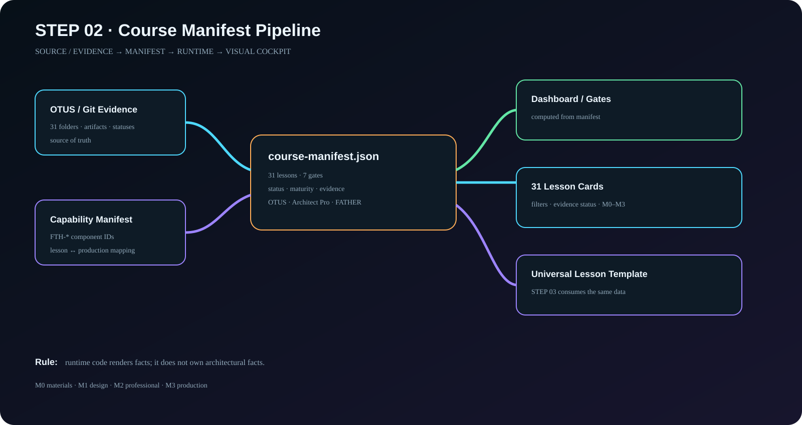

STEP 02 · Data contract
Курс становится машиночитаемой архитектурой
31 урок и 7 gates вынесены из runtime-кода в manifest. Сайт визуализирует факты, но не владеет ими.
Visual
Manifest Pipeline

Runtime view
31 урок из manifest
Карточки ниже читаются непосредственно из course-manifest.json.